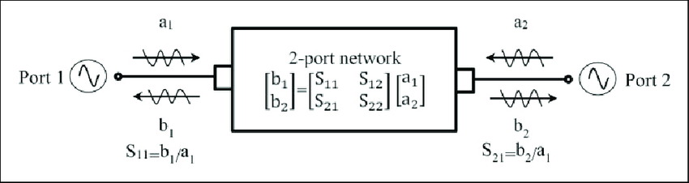
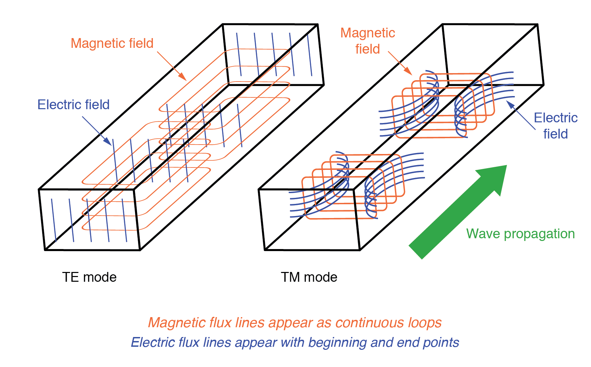
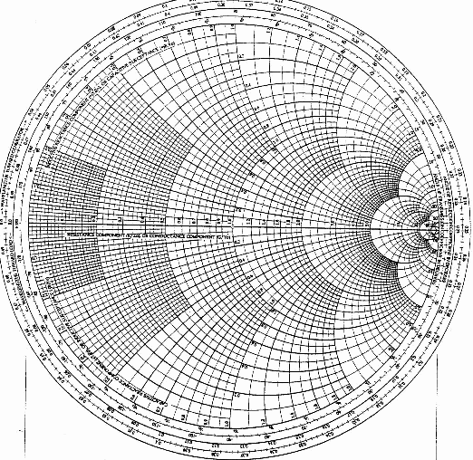

📡 RF & Microwave Systems
🔌 1. What Are RF and Microwave Systems?
Radio Frequency (RF) and Microwave systems operate in frequency ranges from about 3 kHz to 300 GHz. These systems are integral to wireless communication, radar, satellite, and high-frequency circuits. Microwave frequencies typically begin above 1 GHz.
🧩 2. Key Components of RF/Microwave Systems
- Transmission Lines: Coaxial cable, microstrip, waveguides
- Filters: Bandpass, lowpass, highpass, notch
- Mixers: Used for frequency translation (modulation/demodulation)
- Oscillators: Generate carrier signals (e.g. crystal oscillators)
- Amplifiers: Boost signal power (Low-noise amplifiers, Power amplifiers)
- Couplers & Attenuators: Control signal strength and direction
📏 3. S-Parameters (Scattering Parameters)
S-parameters describe how RF signals behave in a network. They define reflection and transmission coefficients in multi-port systems.
- S11: Input reflection coefficient
- S21: Forward transmission (gain)
- S12: Reverse transmission
- S22: Output reflection

📡 4. Waveguides & Transmission
Waveguides are hollow metallic tubes that guide electromagnetic waves. They're lossless at microwave frequencies compared to coaxial lines. Modes in waveguides include TE (transverse electric) and TM (transverse magnetic).

📐 5. Impedance Matching
Impedance matching maximizes power transfer and minimizes signal reflection. Tools like Smith Charts are used to visualize impedance and design matching networks.

Figure: Smith Chart helps engineers visualize complex impedances.
🛰️ 6. Practical Applications
- Radar: Pulse or continuous wave systems used for object detection
- Satellites: Microwave links for uplink/downlink
- 5G Base Stations: Operate in mmWave frequencies (24 GHz+)
- Medical Imaging: MRI, microwave-based diagnostics
🎞️ 7. Interactive Radiation from Waveguide (Animation)
Live sinusoidal wave simulating RF signal propagation through a transmission medium.
🧪 8. Quiz Yourself
Q1: What are S-parameters used for?
Answer: Analyzing reflection and transmission in RF networks
Q2: Which waveguide mode has no electric field along the direction of propagation?
Answer: TE mode
Q3: What does a Smith Chart visualize?
Answer: Complex impedance and reflection coefficients